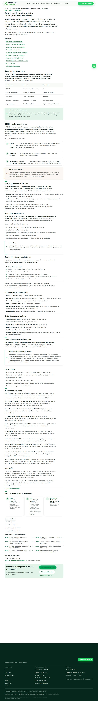
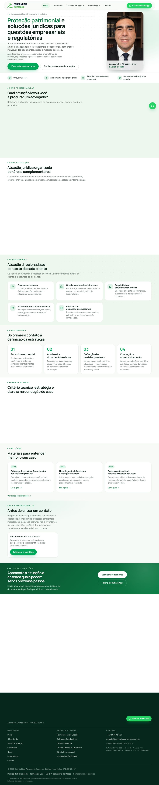
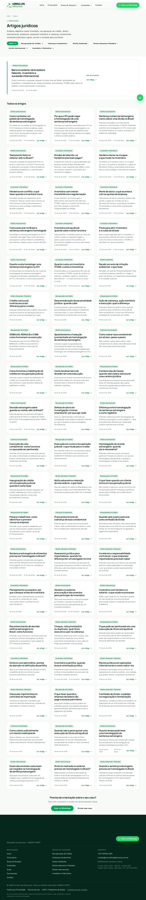
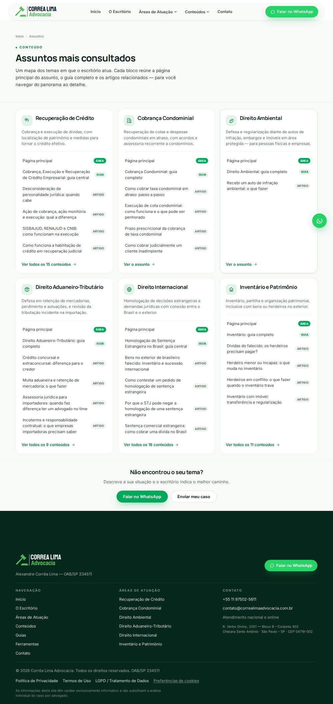
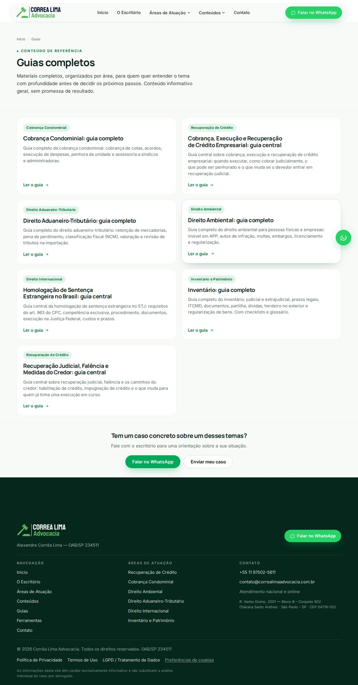
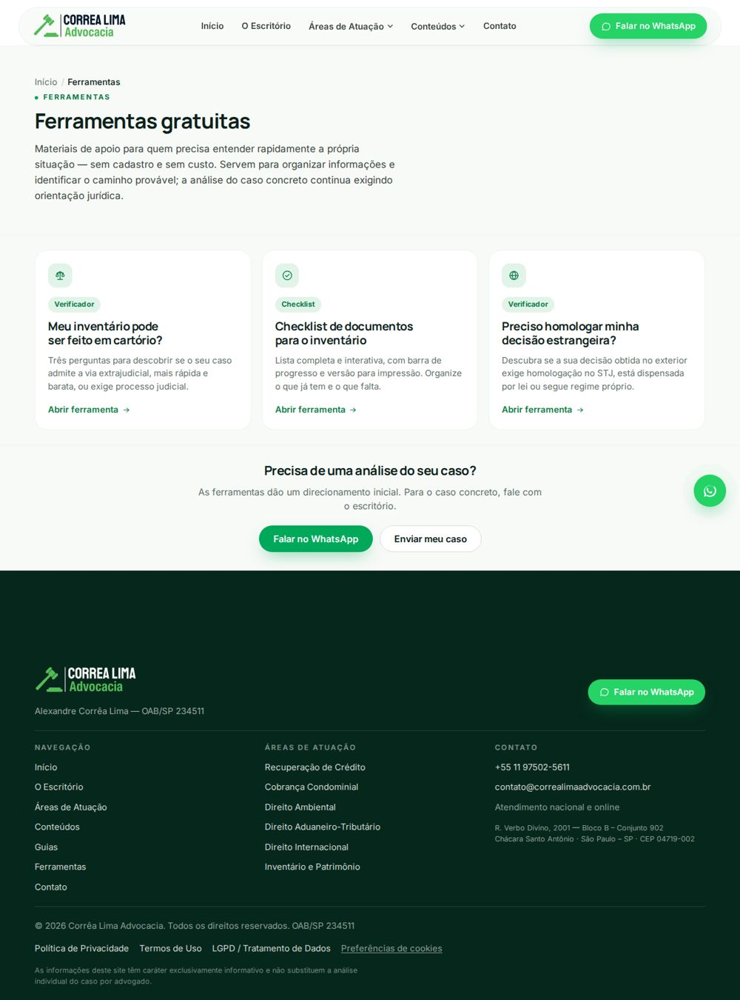
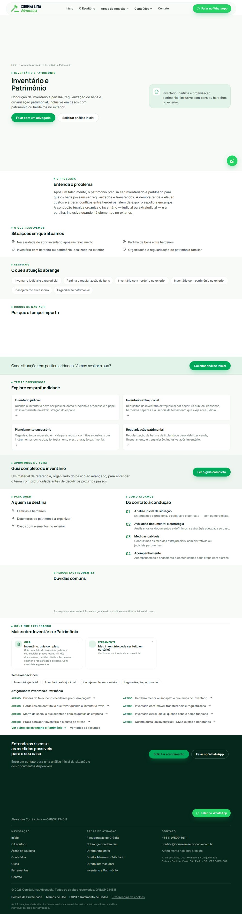
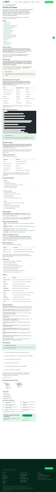
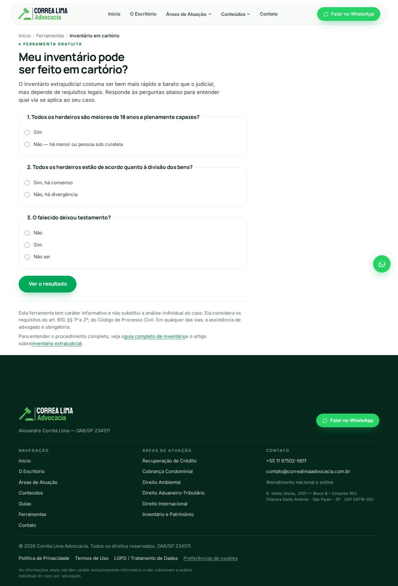

Sprint de polimento — SEO interno, CRO e integridade mobile
Corrêa Lima Advocacia · foco em maximizar a malha de links internos, o tempo de permanência e a conversão, sem alterar conteúdo jurídico, URLs, SEO, schema ou a Home.
132páginas (idêntico)
130URLs no sitemap (idêntico)
0/0/0astro check
16–18links relacionados/página (era 2–3)
0páginas com scroll horizontal
Escopo desta sprint (transparência): o briefing pede uma revisão total. Priorizei o item de maior impacto e explicitamente exigido no critério de aceitação — transformar o bloco de Conteúdos Relacionados (que tinha só 2–3 links) na maior ferramenta de SEO interno do site — e corrigi problemas reais de integridade mobile que encontrei na auditoria. Os demais itens (novas caixas de destaque, timelines, índice sticky em todas as páginas etc.) estão detalhados como roadmap priorizado ao final, com base fundacional já entregue.
1. Auditoria — problemas encontrados
Bloco "Conteúdos e áreas relacionadas" pobre: as páginas-pilar e subpáginas mostravam apenas 2–3 links fixos (campo related de nucleos.ts), subaproveitando a malha interna.
Related fragmentado: artigos/guias usavam três componentes distintos (RelatedContent + ClusterNav + curados), sem ferramenta nem subáreas — inconsistente com as páginas de área.
Scroll horizontal no mobile (pré-existente) em páginas com formulário: o honeypot antispam usava left:-9999px e era sobreposto por .cform input{width:100%}, ficando com 390 px; e o e-mail longo do bloco de contato não quebrava, esticando a coluna. Resultado: 9–41 px de overflow em /contato/, artigos e guias.
Ferramentas desconectadas: não havia link natural das áreas/artigos para as ferramentas gratuitas relacionadas.
2. Melhoria principal — RelatedHub (malha interna rica)
Criei um único componente RelatedHub, alimentado por dados reais (núcleos, subtopics e coleções blog/guias + um mapa cluster→ferramenta). Ele substitui os blocos fracos e passa a exibir, quando existe conteúdo:
Área principal do assunto (card de destaque);
Guia completo do cluster (card de destaque);
Ferramenta relacionada (card de destaque);
Subáreas (chips clicáveis);
6–8 artigos do mesmo cluster;
Links curados (cross-cluster, do frontmatter);
"Ver a área" e "Ver todos os assuntos".
Resultado medido: cada página de conteúdo passou de 2–3 para 16–18 links internos relevantes, sem nenhum link inventado (tudo aponta para páginas já existentes). Aplicado de forma compartilhada em PillarPage, SubPage e nas rotas de artigo e guia — um só componente, sem HTML repetido.

Artigo · desktop (RelatedHub ao final)Mobile
3. Correções de integridade mobile
Honeypot antispam: trocado para o padrão acessível screen-reader-only com especificidade correta (.cform input.cform-hp), eliminando o campo de 390 px fora da tela.
Bloco de contato:min-width:0 nas colunas do grid e overflow-wrap:anywhere no e-mail, permitindo a quebra e o encolhimento da coluna.
Verificação: varredura em 12 páginas × 2 larguras (390 e 360 px) → zero scroll horizontal.
4. Prints — desktop e mobile
Home (inalterada — comprovação)

DesktopMobile
Blog · Assuntos · Guias · Ferramentas

Blog

Assuntos

Guias

Ferramentas
Área · Subárea · Guia · Ferramenta

Área de atuaçãoSubárea · mobile

Guia

Ferramenta
5. Arquivos
Criados
src/lib/related.ts — monta a malha de relacionados (área, subáreas, guia, ferramenta, 6–8 artigos, curados)
src/components/content/RelatedHub.astro — bloco único e rico de relacionados
Modificados
src/components/PillarPage.astro — substitui o bloco de 3 links pelo RelatedHub
src/components/SubPage.astro — idem
src/pages/blog/[slug].astro — RelatedHub no lugar de ClusterNav + RelatedContent
src/pages/guias/[slug].astro — idem
src/components/ContactForm.astro — honeypot acessível (fim do overflow)
src/components/ContactCTA.astro — colunas encolhíveis + quebra do e-mail
Reutilizados
Icon, Container, tokens do site, nucleos.ts, subtopics.ts, coleções blog/guias, ContextualCta.
6. Ganhos por categoria
SEO
Malha interna 5–8× mais densa (2–3 → 16–18 links/página).
Com a base de componentes e a malha interna já estabelecidas, os próximos incrementos de maior retorno são:
Caixas de destaque no conteúdo (Importante, Na prática, Erro comum, Atenção): estender o plugin editorial para converter blocos > [!IMPORTANTE] em callouts — quebra as paredes de texto restantes sem tocar no texto.
Índice "Nesta página" sticky nas páginas longas (guias e artigos extensos): gerar a partir dos <h2> já existentes, no build.
Timelines/ProcessSteps reaproveitando o padrão já criado, aplicados a seções com sequência lógica (ex.: etapas do inventário).
FAQ ampliado onde houver perguntas reais disponíveis (sem inventar conteúdo).
Primeira dobra nas páginas institucionais (o padrão compartilhado já existe em areas-hero.css; estender a /o-escritorio/, /contato/).
Imagens/thumbnails nos cards de artigo quando houver arte (hoje os cards são tipográficos — ótimos para escala, e prontos para receber imagem).